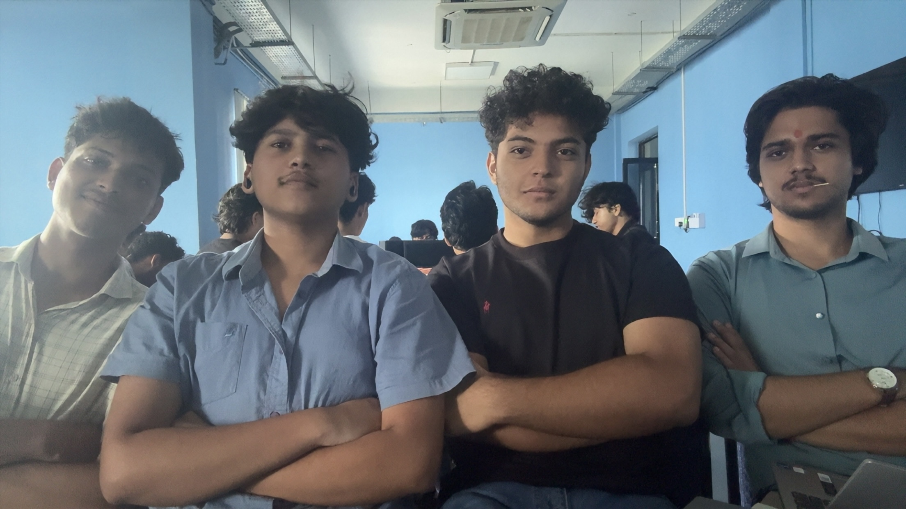
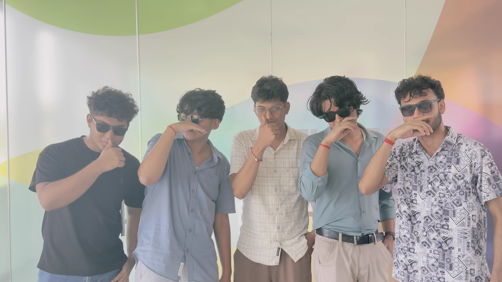
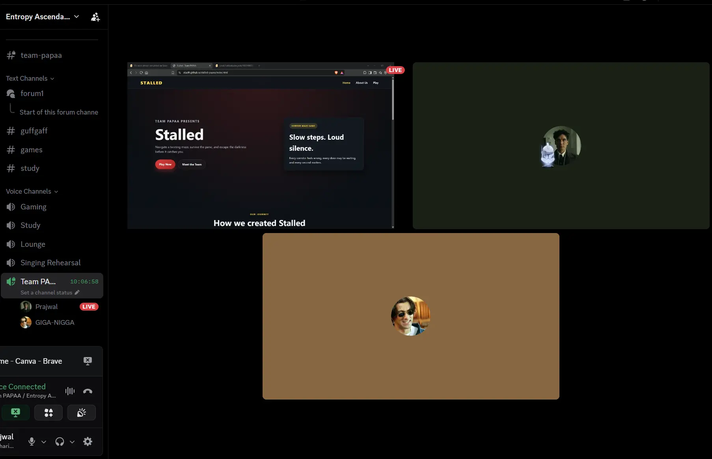

Planning
We started with a clear idea: create a tense maze experience with a strong mood and a simple but memorable objective.
Team PAPAA presents
Navigate an uncertain maze, survive the panic, and escape the darkness.
Our Journey
We started with a clear idea: create a tense maze experience with a strong mood and a simple but memorable objective.
We designed the gameplay structure, created the maze logic, and made sure the experience felt immersive from the start.
We tested the flow, adjusted pacing, and improved the look and feel until the game became more polished and memorable.
4-Day Memory
Over four days, we moved from the initial idea to a complete working game concept. Each day brought new challenges, new creative decisions, and a stronger sense of what Stalled needed to feel like.
We discussed the story, the maze, the atmosphere, and how to make the game feel tense without becoming confusing. By the end, every member had contributed to the final experience.
We brainstormed the concept, mood, and basic structure of the maze.


We developed movement, levels, and the first version of gameplay flow.


We refined the visual theme, tension, and the details throughout the game.


We tested, fixed issues, and finalized the project into a more polished build.


OVERVIEW
Stalled is a maze game created from scratch by Team PAPAA. Use the embedded game below to experience the project directly.
STALLED PREVIEW